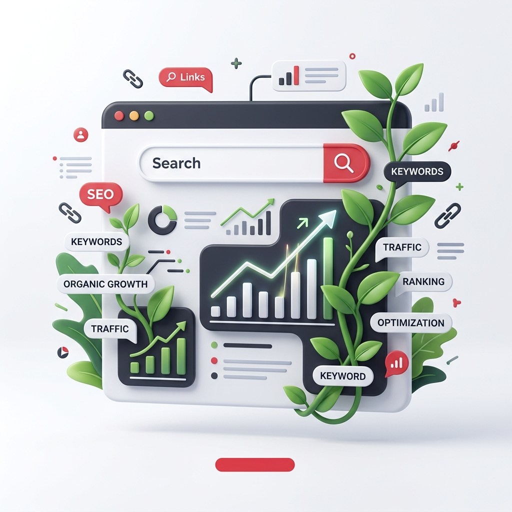

Cold outreach gets you in front of prospects. SEO makes sure that when those same prospects go looking — for solutions, for providers, for answers — your name is what they find. It's long-term authority, compounding over time.
Get a Free SEO Audit →
We don't do generic SEO. Every strategy we build starts with a deep analysis of your business objectives, your competitive landscape, and the actual search behaviour of your buyers. The goal isn't rankings for vanity metrics — it's organic traffic that converts.
We begin with a full technical audit — page speed, crawlability, site architecture, indexation issues, and mobile performance. The foundation has to be right before any other SEO effort compounds on top of it.
We identify the terms your ideal customers are using at every stage of the buying journey — from awareness to decision — and map them strategically across your site architecture. High-intent keywords that align with your deal size and sales cycle take priority.
On-page: meta structure, internal linking, content hierarchy, and schema markup. Off-page: authority building through earned backlinks from relevant, credible sources in your industry. Both matter. We don't deprioritise either.
We develop a content roadmap built around topics your buyers are actively researching. Articles, landing pages, and case studies that answer real questions — positioning your brand as the authoritative voice in your space before the first sales conversation begins.
SEO is a long game. We set realistic expectations, report transparently, and build the kind of organic presence that becomes a genuine business asset — not just a traffic number.
Let's Talk About Your SEO Strategy →Outreach gives you immediate pipeline. SEO gives you compounding authority. When a prospect receives your LinkedIn message or cold email, they'll search for you. That's the moment SEO takes over — turning outreach-warmed leads into inbound enquiries.
See LinkedIn Outreach →